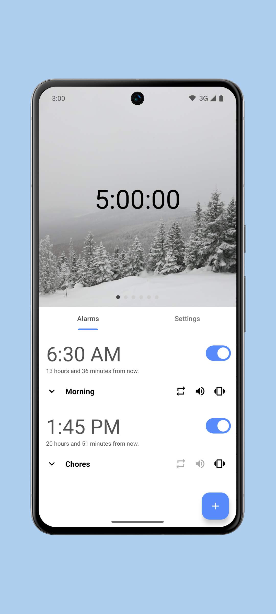
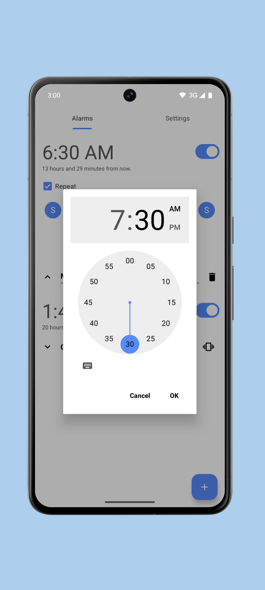

把手机变成一台正经闹钟：Chronos 用了一周的真实感受
一个没上 Google Play 的开源闹钟应用，慢唤醒、主题定制、闹钟标签这些细节做得怎么样？用了一周，说说我为什么把系统闹钟换了。
说实话，我之前对闹钟应用没什么期待——系统自带的闹钟不就是设个时间、响个铃，还能折腾出什么花样？直到有天凌晨五点被手机最大音量炸醒，一整天头都是蒙的，我才想起来：闹钟这种东西，用起来体验差距真的很大。
朋友推荐了 Chronos。它的官网上有一份挺详细的介绍，我一眼就被「慢唤醒」三个字吸引住了——这不就是我被炸开那天最想要的功能？不过下载前还是犹豫了一下：没上 Google Play 的应用靠谱吗？最后还是去它的开源仓库看了看，开发者维护挺活跃的，IzzyOnDroid 上也有收录，就放心装上了。
第一眼：界面干净，不像个闹钟
安装完点开，说实话我有点意外——界面太干净了。没有花里胡哨的插画，没有引导教程，直接就是一张时间数字卡片，下面是闹钟列表。配色默认深色，数字占了屏幕快一半的位置，晚上扫一眼能清楚看到时间，不会糊。

设置项藏得深，但不是乱。外观、铃声、震动、闹钟行为，分类挺清楚，想深挖参数时去文档翻翻就行。四种主题模式选起来也不纠结：Auto 跟随系统、Day 浅色、Night 深色、AMOLED 纯黑——我直接选了 AMOLED，OLED 屏省电是一方面，夜间看时间的时候纯黑背景真的不刺眼，之前用系统闹钟夜间模式那种深灰背景还是会有点亮。
慢唤醒：这功能我会一直用
Chronos 最让我惊喜的就是慢唤醒（Slow Wake-up）。之前被炸醒那次，真的是心理阴影——深睡状态下突然最大音量，整个人瞬间坐起来，心脏咚咚跳，一整天都不舒服。
慢唤醒的逻辑很简单：响铃开始时音量很轻、屏幕微亮，然后随时间推移线性爬升，亮度也渐渐增强。我设了三分钟的渐变时长，实际体验下来：前三十秒几乎听不到声音，一分钟左右开始有轻柔的铃声，两分钟到达正常闹钟音量。我睡得不算浅，但基本上在一分半钟的时候就醒了，那时候音量还没到顶，醒来的感觉是被「慢慢叫醒」的，不是被炸开的。
和贪睡配合起来效果更好——第一次响铃半醒状态下按了贪睡，九分钟后再来一遍，这时候我已经有心理准备了，通常第二遍就彻底起床。
闹钟标签：不起眼，但用了就回不去
设了两三条闹钟之后，我发现 Chronos 每条闹钟都可以加标签。系统闹钟也能起名字，但我从来没认真用过——总觉得多此一举。
用了 Chronos 之后才发现，这功能真的能省脑子。工作日 6:30 的闹钟我标了「班车 ⏰」，周末 8:30 标了「懒觉 🌙」，午休闹钟标了「烧水」。关掉的时候不用盯着时间回忆「这是周几的闹钟」，看标签就知道。响铃的时候屏幕上也会显示标签，「班车」响起来和「晨会」响起来，起床的动力确实不一样。
新版还支持 emoji，我给不同用途的闹钟配了不同符号，列表里扫一眼就能分清，比纯文字快多了。

还有几个小细节
Chronos 不是只有慢唤醒和标签。
四种主题之外，2025.3.0 之后还能自定义强调色——Catppuccin 色板也支持，想把界面改成自己喜欢的配色很容易。背景图也能换，时间数字的字体也能选。主题、配色、背景、字体四件套配完，这个时钟就完全是「你的」了。
震动模式也有好几种可选，Heartbeat 节奏的震动我试了一下，和慢唤醒搭配特别温和，不会突然一下震得人弹起来。
系统闹钟做不到的事情，Chronos 都覆盖到了。当然它也有小缺点：没有 Google Play 商店那种一键自动更新的便利，需要手动去仓库或 Obtainium 追踪新版本。但如果你愿意花两分钟装一个开源应用，这些都不是问题。
适合谁
- 被最大音量闹钟炸醒过、一整天都不舒服的人——慢唤醒会救你
- 有好几条闹钟、经常搞混哪条是周几的人——标签加 emoji 完美解决
- 喜欢折腾界面、想把手机时钟改成自己专属的人——主题、配色、背景、字体全可定制
- 用旧手机当床头钟的人——AMOLED 纯黑主题 + 慢唤醒 + 只在耳机播放，是真的温柔叫你起床
不太适合的情况：你就是嫌系统闹钟够用、不想折腾——那 Chronos 的功能对你来说可能有点厚。但说实话，用过一周之后，我再也不想回到系统闹钟了。
这篇 Chronos 的整理也同步到了三份开源仓库，从GitHub、Gitee 到 GitCode 都能拿到，哪个顺手用哪个。